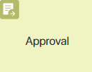The Approval activity is used to manually or automatically approve or reject a document, an app item, or a file during a business process. When the process moves to the Approval activity, an approval sheet is automatically created.
The location of the activity on the process diagram and its settings differ depending on the approval method that you select:
- Manually. In this case, when the process moves to the Approval activity, the task to review the document is assigned to the executor and an approval sheet with the Pending approval status is created. In the activity settings, you can configure the approval management. You can set parallel or sequential approvals for a group of approvers, the requirement to sign the document with a digital signature, and set a deadline. An employee actively participates in the approval process by performing the task that you have configured in the activity.
- Automatically. This option provides that the Approval activity is executed automatically. No approval task is assigned within the activity. Such a task should be set up additionally and placed on the process diagram before it moves to the Approval activity. The executor only needs to make a decision (approve or reject) via the standard task interface. Then the process will move to the Approval activity, where the corresponding decision will be made automatically. At the same time, an approval sheet with the decision is created. Read more in the Automatic approval article.
Set up manual approval
Place the Approval activity on the process segment where the employee specified in the swimlane must approve or reject the document. The user will be tasked to review the document. At the same time, an approval sheet will be created. It will record the approvers’ decisions and their comments with additionally attached files.
Please note that the End Approval auxiliary element is used for manual approvals. It is placed on the process diagram after the Approval activity to make a final decision without waiting for the end of the process. We have described such a process in detail in the Approval use case article.
начало внимание
Make sure that you have added a process context variable that will store the object sent for approval.
конец внимание
To open the settings, double-click on the Approval activity on the process diagram. The settings are managed in three tabs: General, Deadline, Schedule in Calendar, Connectors, Custom Statuses, Signature, and Substitutions. You can specify the task name, set a deadline, define the approval logic, add the task to the executor’s calendar, enable the signature, etc.
General tab
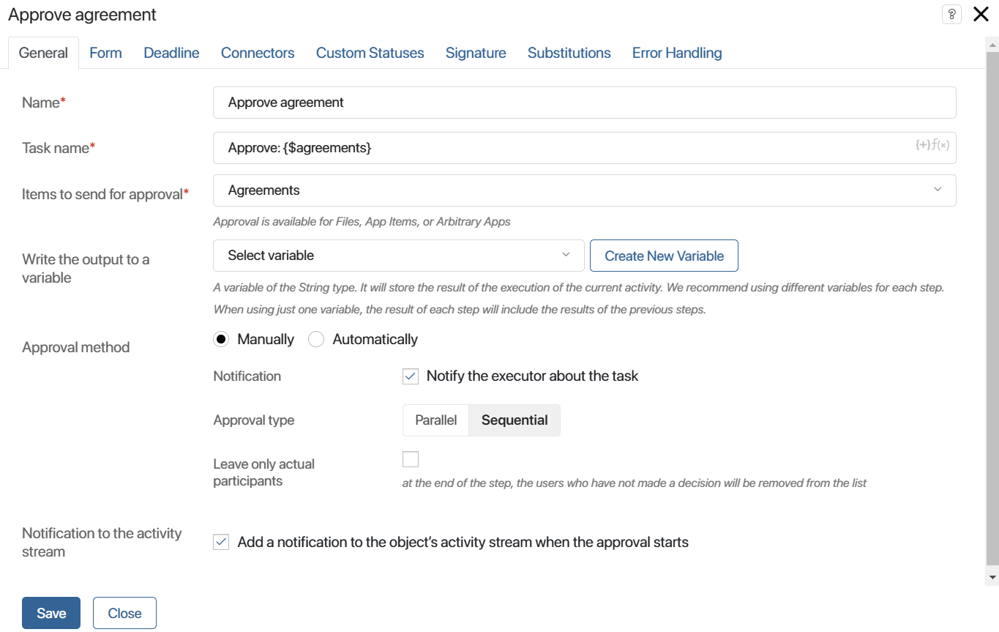
- Name*. Enter a name that will be displayed in the process diagram. We recommend choosing a short yet informative name to make the process diagram easy to read.
- Task name*. Enter a text that the task executor will see in their task list or on the task page. You can add a context variable to the name to make it more detailed. To do that, click on the {+} icon in the right corner of the field. You can also add conditions and functions, just like for the item name templates. This allows you to generate a more informative name for the task.
- Item to send for approval*. Specify the context variable that will store the file or app item.
- Write the output to a variable. Specify a variable of the String type to which the code of the result of the current activity execution will be written:
approvedorrejected. The result depends on which button the approver clicks on the task page: Approve or Reject. When there are several approvers and at least one of them refuses to approve, the result will contain therejectedvalue. If the agreement is terminated, the terminated value will be written. This variable can be placed on the app form, as well as used in gateways and scripts to implement more complex approval logic. - Approval method. Depending on the selected method, the set of tabs in the settings window and the list of settings listed below the current tab differ. To configure automatic approval, select the Automatically option.
- Notification to the activity stream. Enable this option so that a notification about approval start is sent to the file or app item activity stream.
In case you select the Manually approval method, the following fields will be displayed below:
- Notification. Enable the option to ensure that the approver receives a task assignment notification in the activity stream.
- Approval type. This option appears only if a user group or a department is specified as executor in swimlane settings. Determine how the approval task should be assigned and executed:
- Parallel. The approval task will be simultaneously assigned to all executors included in the swimlane. Depending on the connector settings, there are two options. Either each executor needs to review the document before the process moves on to the next step, or the next step starts as soon as one of the executors approves or rejects the document.
- Sequential. The task will be assigned consequently to all the executors included in the swimlane one by one. The process will go to the next step only when all the employees will complete the task. With connector settings, you can determine what happens if an approver rejects the document.
Please note that in a dynamic swimlane, the tasks will be assigned in the same order as users were specified in the variable that stores users. In a static swimlane, the sequence is random.
- Leave only actual participants. Remove those users who were assigned the approval task but had neither approved nor rejected the document from the approval sheet.
Here are some examples to explain more clearly in which cases this or that type of approval is used.
Let’s assume that the approval process in a company is organized in such a way that the contract is sent to an accountant, a lawyer, an economist, and a security officer for review. It is important for us that the work on the contract is not delayed and the decision is made as soon as possible, so the task of approval should come to all the specified employees at the same time. In this case, you should wait for each of them to decide before sending the contract further down the path. If you select the Parallel option and set the approval percentage to 100 in the connector settings, then all employees will receive the task Approve contract, and until each of them completes their work, the process will not move on. |
Let’s consider the work of the legal department. Any employee can check the content of the contract for compliance with the law and predict the legal consequences of the stated conditions. It does not matter who exactly will be involved in the approval, it is only important that the task be completed as quickly as possible. In this case, you should use the Parallel option, but at the same time set the percentage of approvals and rejections in the connector settings to be higher than zero. The task will be sent to each employee of the legal department, and the one who is less busy at the moment will be able to start performing it immediately. When one of the employees makes a decision, the approval task will disappear from the list of tasks of other users. If the Leave only actual participants option is enabled, only the user who provided a decision will be displayed in the approval sheet. |
Suppose we need several managers to read and approve a report before the process continues. If you select the Sequential option, the system assigns the review task to one manager first, and after they approve the report, to another manager. In the connector settings, you can specify how to proceed if one of the approvers rejects the report. |
Form tab
This tab appears if an app item has been sent for approval. It allows you to configure your own approval task form from scratch. If you want to use the default form, you do not need to change the settings on this tab.
To create a form, click Default and then click Create Form.
This opens the form template in the interface designer. Place the widgets and buttons you want on the form. You can apply scripts, set form validation, etc. Save the settings you have made.
To configure the display of the app item properties being sent for approval, go to the Form tab in the Approval activity settings again.
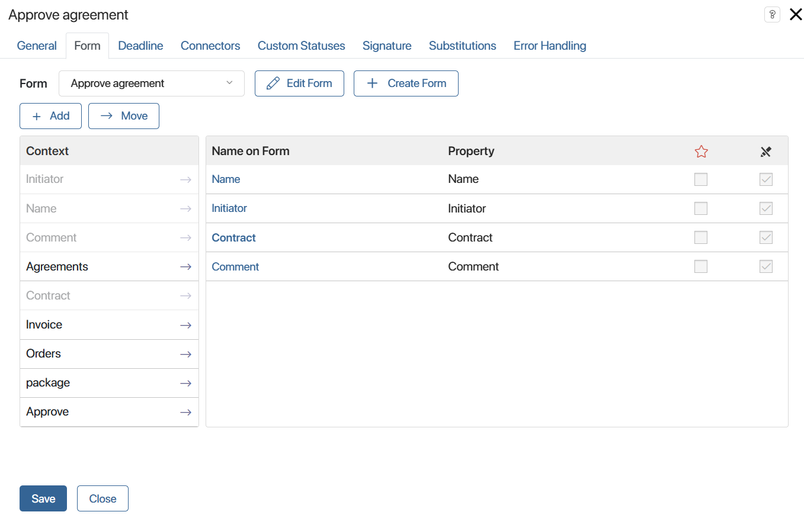
Place the required fields on the form or create new ones. Set the settings of their visibility and mandatory filling. These actions are similar to the form settings in the Task element. Please note that these settings are available only for a custom form.
Deadline tab
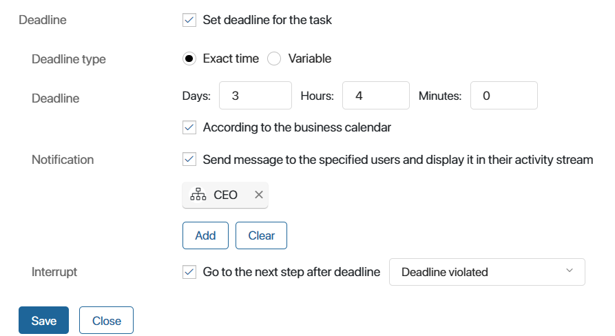
On this tab, you can set the due date for the task as well as specify the system behavior in case the task is not completed on time.
There are two ways to set the deadline:
- Exact time. Specify the number of days, hours, or minutes that the executor has to complete the task. The calculations can be based on the business calendar.
If the approval task belongs to a swimlane with multiple executors, each of the executors will have the specified number of days, hours, and minutes to complete the task.
- Variable. Sometimes it is important that the user completes the task before a certain date. For example, an employee can specify the exact date before which others need to read the new internal regulations. By this day, all specified users should have made a decision on the document. In this case, you can use a context variable of the Date/Time type to define the deadline for the approval task.
If the approval task belongs to a swimlane with multiple executors, and a variable is used to define the deadline, all the executors will have to complete their tasks by this moment. Otherwise, the task will be considered overdue.
In the Notification field, you can select users who will be notified if the executor fails to complete the approval task on time. You can select the current user, a context variable (for example, the process initiator), a user group, or an org chart item.
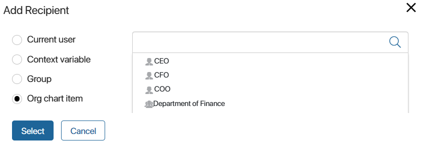
The Interrupt field allows you to specify which path the process flow should take if the executor fails to complete the task on time.
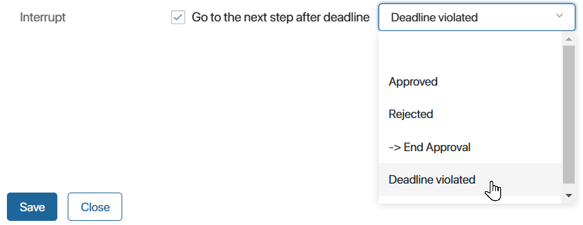
This connector is marked with the timer icon on the process diagram. The process takes this path if the set time is over but the executor hasn’t marked the task as completed. The other connectors will not be activated.
For example, let’s say that the employee from the legal department didn’t complete the contract approval task on time. The process flow will take the escalation connector and assign the next task to the CEO.
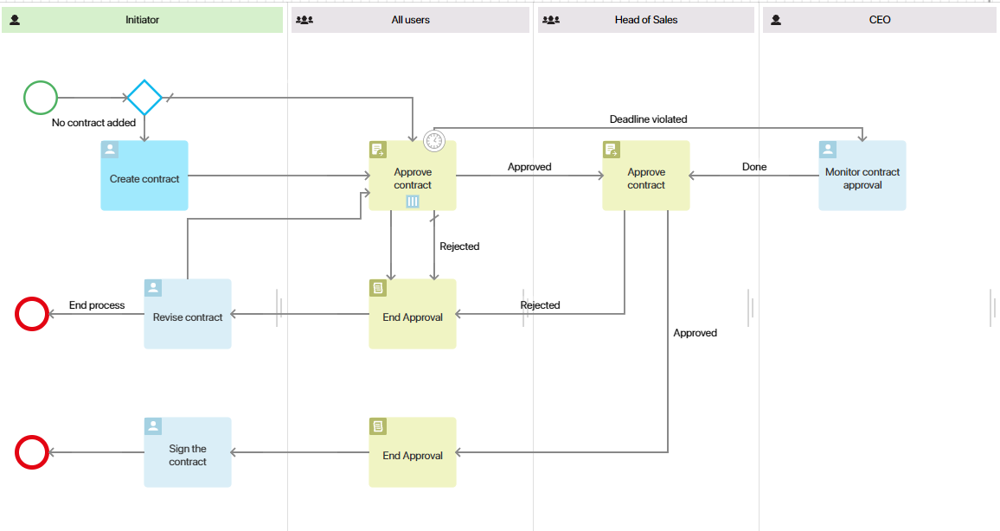
Schedule in Calendar tab
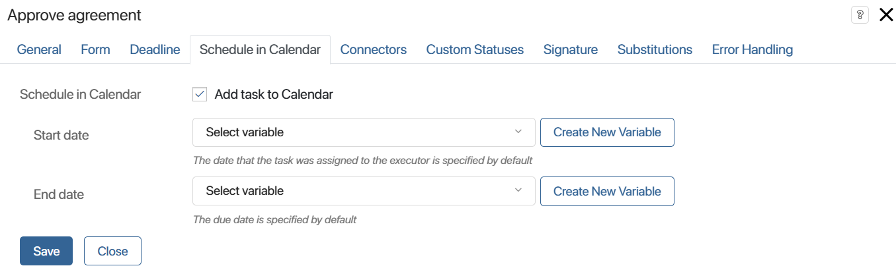
This tab appears if a deadline is set for the task, and is used to add the task to the executor’s calendar.
To avoid overscheduling, you can schedule the task only for some of the days. Let’s say that the approval deadline is in a week. You can schedule the task to appear in the calendar only on the last three days of the week:
- Add Date/Time variables to the context. They will store the values for the task deadlines in the calendar.
- Add a script on the process diagram before the Approval activity to calculate the values of these variables.
- On the Schedule in Calendar tab, link the variables with the Start date and End date fields.
Connectors tab
Here you can define the approval logic: specify the conditions that define which connector the process flow should take. Do not forget to specify a default connector that the process will follow if none of the specified conditions are met.
If you have added a connector for error handling, it will be displayed on this tab along with the others. Do not set conditions for it, as they will be ignored when the process is executed.
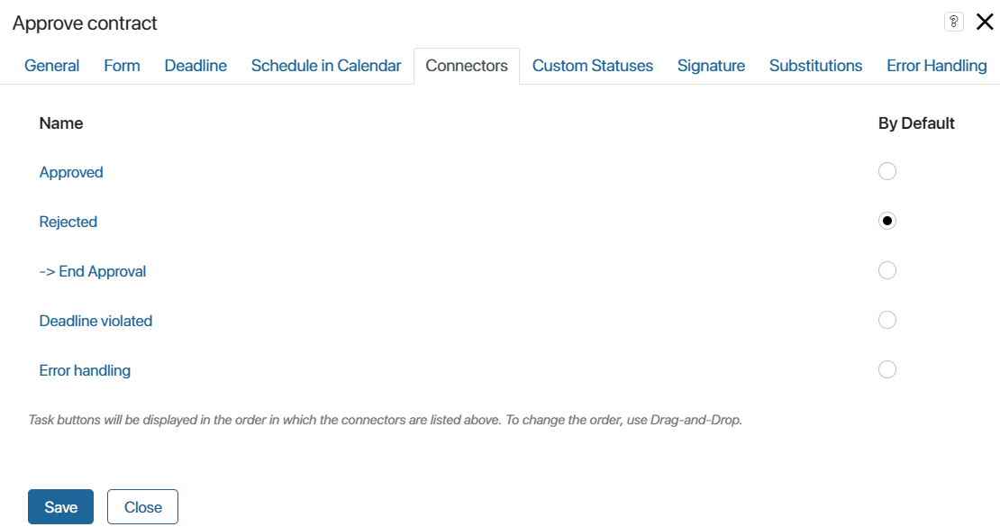
Note that if an escalation connector is set up on the Deadlines tab, the other connectors can be activated only before the task’s deadline is reached.
начало внимание
By default, the Approval task form has only two buttons: Approve and Reject, regardless of how many outgoing connectors the activity has on the process diagram. You can add other buttons for the task by setting up custom approval statuses. However, the further process flow is determined only by the conditions set for the connectors.
конец внимание
To open the connector’s settings, double-click on its name.
On the General tab, enter a short and understandable name for the connector. It will be displayed on the process diagram. You can also add a description of the connector.
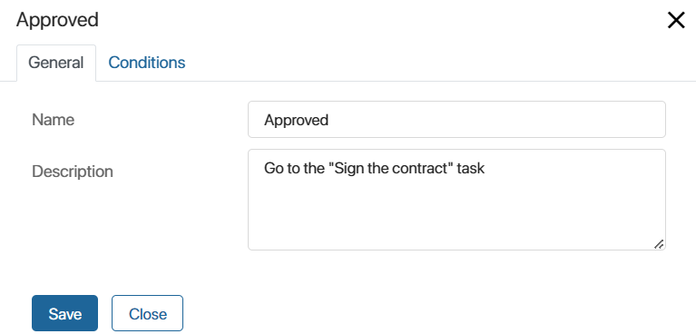
On the Conditions tab, adjust the settings:
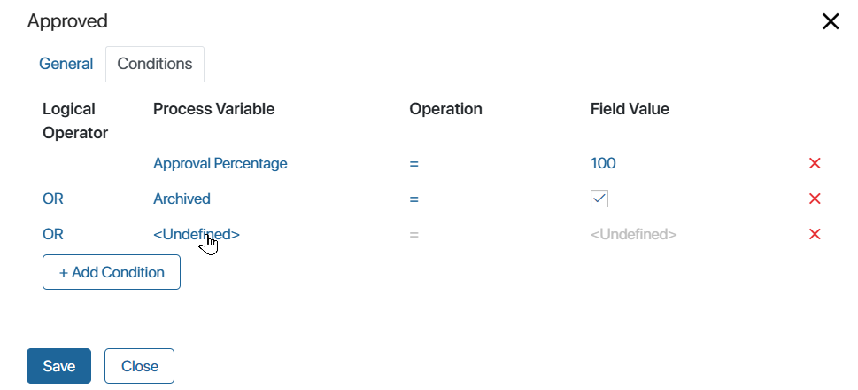
- Process Variable. Specify a variable from the process context or a specific value:
- Approval Percentage.
- Rejection Percentage.
- Archived. Check whether the approval sheet has been archived. Please note that for items the rules of sheet archiving are set in the app settings. For files, sheets are always archived when a new version is added.
- Approval object not found. Check that the object is not deleted from the system. Please note that this option works only when a file is sent for approval. If an app item is being sent, the process will be terminated with an error upon its deletion.
- No access to the approval object.
- Operation. Define a comparison operator to check a specific condition.
- Field Value. Enter the value at which the condition will be met.
- Logical Operator. This is a logical operation used to check multiple conditions. If the overall check result is True, the process continues with this connector:
- AND. The result is True if both conditions are met.
- OR. The result is True if at least one condition is met.
- AND NOT. The result is True if the first condition is met while the second condition is not.
- OR NOT. The result is True if the first condition is met or the second condition is not.
Please note that conditions are checked in the order they are listed in the connector settings.
For approval tasks assigned to a swimlane with multiple executors, connector conditions are checked each time one of them completes the task.
For more details on using connectors in the process, refer to the Connectors article. To configure conditions for connectors in the Approval activity, read the Approval use case article.
Custom Statuses tab
When creating a custom status in the task, an additional button will appear. With its help, employees will be able to provide custom decisions within the standard approval process.
Depending on what object (app item or file) is stored in the variable specified on the General tab in the Item to send for approval* field, the button will appear on the item page or on the file preview page.
начало внимание
The buttons in the approval task are used only for making a decision and do not determine the further flow of the business process. The path to which the process is directed is automatically selected depending on the conditions set in the connector settings.
конец внимание
For instance, you can add the status Approved with Comments. Employees can approve a document that requires minor edits. The document will continue to move through the process according to the logic defined by outgoing connectors. In the approval sheet, the Approved with Comments status will appear next to the last name of the user who selected this decision.
The final status of the item will depend on whether it is approved or rejected by the approvers.
To configure custom statuses, fill out the fields:
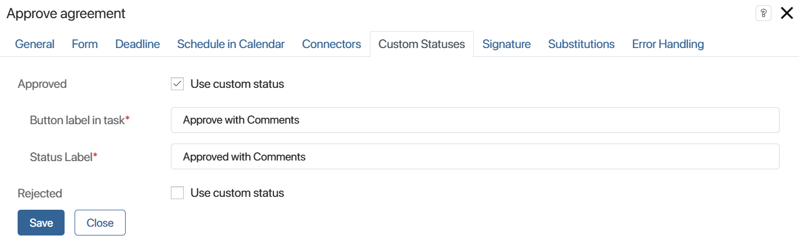
- Approved/Rejected. Enable the Use custom status option if you want users to be able to provide an additional decision within the approval or rejection decisions.
- Button label in the task*. Enter the name for the button that the user will click to make a decision on the app item or file, for example, Approve with Comments. Buttons for additional decisions will be displayed next to the system ones in the approval task.
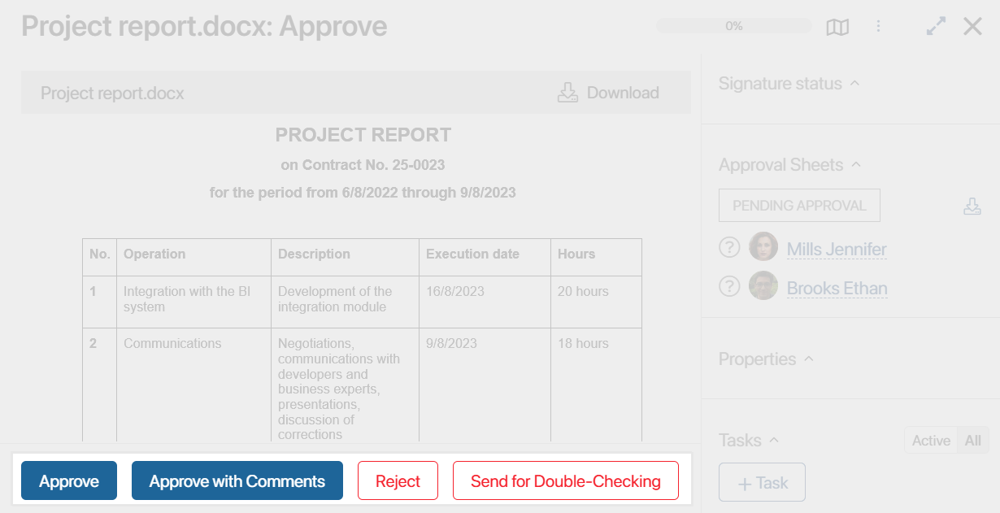
- Status Label*. Enter the name of the status that will be displayed in the approval sheet after closing the task.
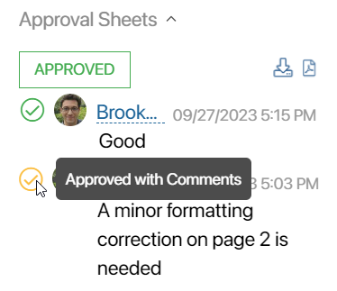
The custom status will be shown in the approval sheet and will also be displayed alongside the system statuses when the sheet is exported.
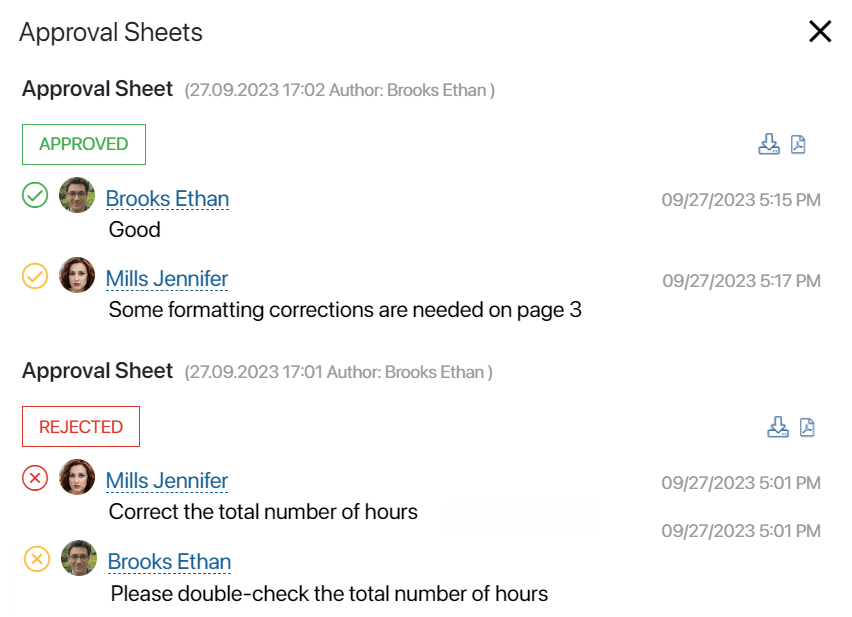
Signature tab
You can configure the use of an electronic signature at the approval step. In this case, the user clicks the Approve button in the received task and then enables the option of signing. In the opened window, the employee selects the objects to sign: attributes, file, and resolution. Thus, they make the resolution and confirm it with their electronic signature. The data about it are saved on the page of the signed document. For more information on how to perform such a task and where to view the details of the applied electronic signature, see the Digital signature in apps article.
To make it possible to sign the approval object or decision, set the following parameters on the Signature tab:
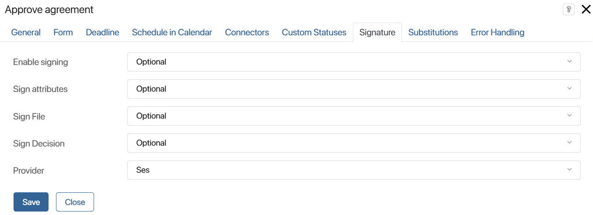
- Enable signing. You can disable signing by selecting Do not use. Then the user completing the task will only need to click Approve without having to sign the document.
To make a signing pop-up appear when a user clicks Approve, select one of the following options:
- Optional. The Sign option is disabled by default. Instead of Next, the user sees the Approve button. By clicking it, the user will approve the document without signing. At the same, time the user can set a checkbox and proceed to signing by clicking Next.
- Preferred. The Sign option is by default enabled but the user can disable it.
- Required. The Sign option is by default enabled, and the user cannot disable it. The user will not be able to close the task unless they move on to signing the attributes, document file, and solution.
- Sign attributes. Defines whether the approver needs to sign the app item attributes:
- Do not use. The Sign attributes option will not be displayed. The user cannot sign the attributes.
- Optional. The default checkbox is not selected in the Sign attributes option, the user can enable it.
- Preferred. The default checkbox is selected in the Sign attributes option, the user can disable it.
- Required. The option is selected by default and cannot be disabled. The user cannot approve the document without singing its attributes.
- Sign File. The settings for this field are the same as for Sign attributes.
- Sign Decision. The settings for this field are the same as for Sign attributes. With this option, the user signs a text file generated by the system. It includes information about the approval task, the item sent for approval, the approver’s decision and comment, and the user who was approving the document.
- Provider. Select the provider whose certificate will be used for signing. The list is formed from the digital signature provider modules that are configured in Administration > Modules > Digital Signature. The user will not be able to change the selected value to another one. If the field is left blank, the provider can be selected at the moment of signing.
Substitutions tab
On this tab, you can specify a variable that controls the reassignment of the approval task to an employee who substitutes the primary performer.
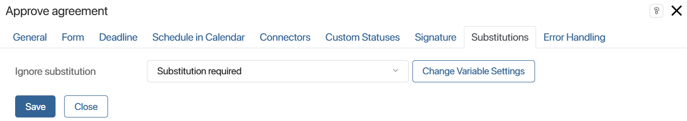
In the Ignore substitution field, specify a variable from the business process context of the Yes/No switch type.
If the variable is set to Yes, the approval task will be assigned to the initially specified approver, and if it is set to No, it will be assigned to the substitute employee. The value of the variable can be changed during the business process, for example, by placing the variable on the form of another task, or by using scripts.
For example, you can ignore substitution if the document to be agreed upon contains confidential data that should not be disclosed to third parties.
Error handling tab
During the process, an error may occur during the approval. For example, if a variable storing a file or app item for approval is not populated. You can define which path the business process will follow in this case and configure a notification:
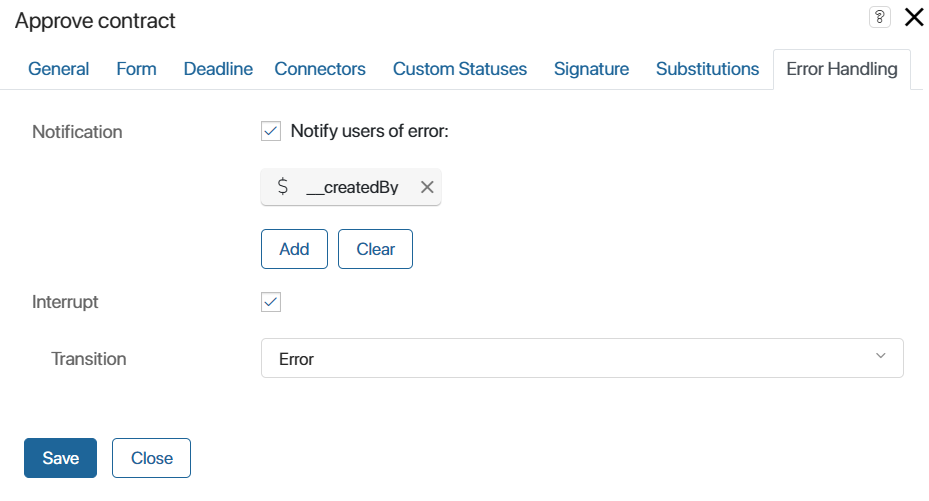
- Notification. Enable the option and specify the users to whom notification of an error in the process will be sent. You can select a user, a user group, or an org chart item, and specify a context variable, for example, the process initiator.
- Interrupt. Enable the option and then specify in the Transition field which path the process will follow in case of an error. The connector specified in these settings is marked on the process diagram with the icon.
Please note that if you select a connector for which conditions are set, they will be ignored when the process executes. The process will continue on the specified connector only in case of an error.
When the settings are complete, click the Save button.
Approval sheets
As soon as the process reaches the Approval activity, a notification about the assigned task appears in the #Activity stream of the executors with a link to the file, document, or app item.
An approval sheet is created on the object’s page, listing the employees assigned to the tasks. A question mark appears next to the user who has not yet reviewed the document.
After the task is completed, the approval sheet is updated with the date, time, decision, any comments left, and an additional attached file explaining the employee’s decision. You can download an attached file by clicking on it in the sheet.
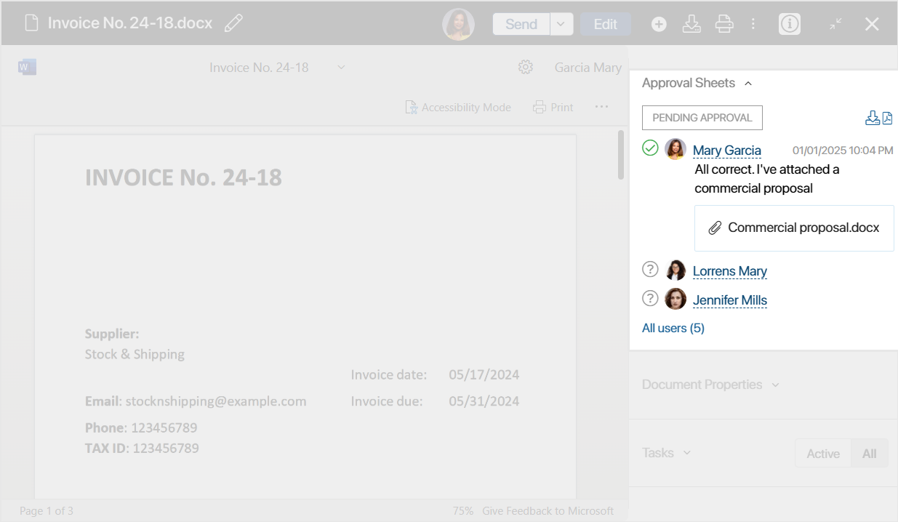
If the document is sent to multiple executors, you can view the entire list by clicking All users in the Approval Sheets section. In the opened window, users can be filtered by decision.
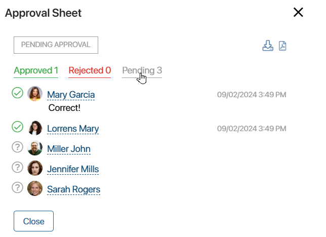
The approval sheet with all resolutions can be exported as an .xlsx or a .pdf file. To do this, click the required export button on the document’s side panel.
Read more about it in the Lists of informed users and approval sheets article.